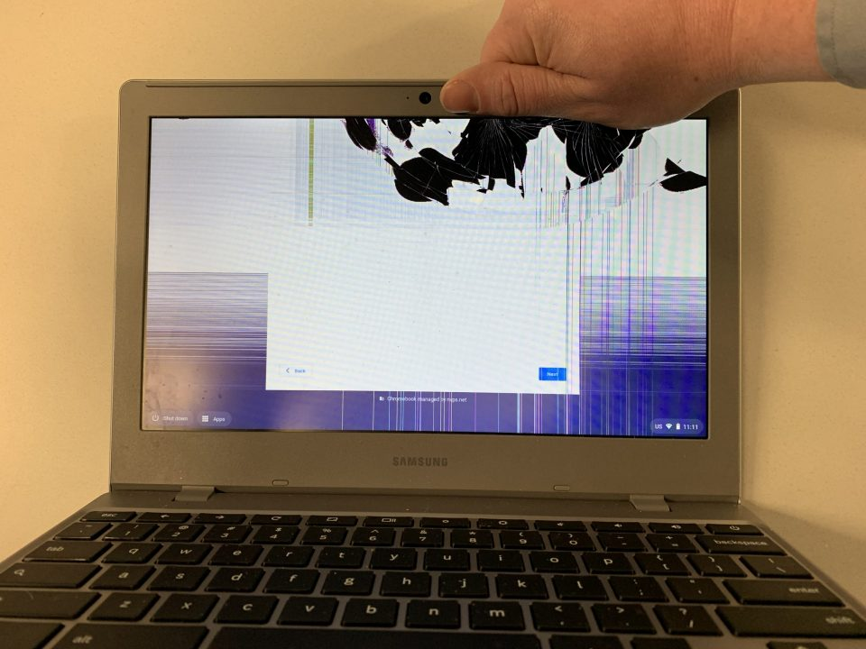

Re-enrolling Chromebooks fixes almost any software issue. If you ever experience something wrong with a Chromebook—such as the wrong language setting, continuous talking, or a black screen when turned on—re-enrolling will most likely fix it.
How to re-enroll a Chromebook
If a students Chromebook has physical damage, make sure the IT department is aware and email your manager. If your school supports it, make sure the student submits a help ticket. Turn the Chromebook into the front office so the secretaries can send the Chromeobok into the ESC for repairs.
